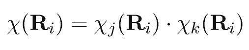
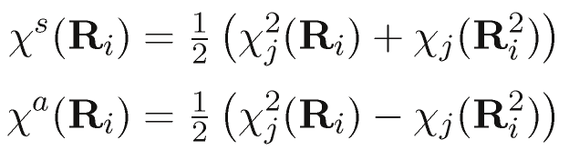

Character Tables are an important tool derived from Group Theory and are used in many parts of molecular chemistry, particularly in spectroscopy. On this page, you can find character tables for all remotely interesting discrete axial point groups, plus the groups for cubic and icosahedral symmetry.
The output is shown as a number of tables that usually behave intelligently on hovering; it is often possible to click elements on the edges of the table to highlight rows, columns or other elements permanently. Saving a page (together with styles and scripts, which are the same two files for all tables) creates a fully functional offline copy.
Most output should be self-explaining. However, in the “Notes” section, several issues are mentioned that merit an explanation.
The interactive features, in particular processing of form input, should also work without much explanation. Note the that form for the Reduction Formula accepts not only character values, but also directly the number of atoms stationary under the symmetry operation; just enter #n for n unmoved atoms. See below for more details on this.
I have tried hard to find real molecules exemplifying the point groups (full support for n≤6, partial 7≤n≤10). While I was not successful for all point groups, I could find a lot more examples than I originally expected, for example, the “molecular wheels” with D10h symmetry.
While some of the example molecules have been characterized by X-ray crystallography, some others are known only from theoretical studies, and some are just educated guesses on my part. Keep in mind that non-crystallograhic symmetries (with symmetry axes of order five, seven, eight, …) can never be confirmed by crystallography, and that small deviations from the idealized symmetry are common in crystals. Also, systems with internal rotations or other “floppy” degrees of freedom do not have a rigid structure, and assigning a point group to them involves some idealization.
The examples stem chiefly from inorganic (including coordination commpounds and clusters), metallorganic and organic chemistry; supermolecular chemistry and biochemistry have been mostly avoided.
Sad to say, but browser compatibility is still an issue in the middle of the second decade of the 21st century.
The main, or rather only, culprit here is Microsoft. If you buy ($$$) a kind of operating system that comes with some version of Internet Explorer, then that browser has a fixed number of capabilities and bugs which behave totally invariant with respect to time, this is, they will persist unaltered till Judgement Day. Updates to later versions need extra work by the user, and are generally unavailable for some combinations of system parameters. Compare, if you download (free!) Firefox, Chrome, Opera or whatever you want, this will usually update itself automatically every few weeks, fixing existing bugs and teaching the browser more tricks that web authors can rely upon as “generally available”.
Now, it does not help that Microsofts rendering engine is also (a) the most buggy, (b) most idiosyncratic and (c) least capable, not to mention that (d) it is not available for testing to web authors who develop their pages on other operating systems than The-One-Which-Cannot-Be-Named.
So, while I can be reasonably sure that these Character Tables perform well with Browsers based on Gecko (Firefox, Seamonkey), WebKit (Chrome, Safari) and Opera’s old proprietary Presto engine, I simply have no idea whether they work well on Internet Explorer (no, I will not install a gigabyte-heavy virtual machine that expires every few months). Having performed painful wine workarounds, I do know, however, that Internet Explorer 7 and lower fail disastrously because they cannot recognize linebreaks, and that Internet Explorer 8 knows linebreaks but fails on something else long before the job is done.
The Character Tables you (hopefully) see on your screen are mostly produced inside your browser. The server serves a crude text file with superficial HTMLification that can be used as a fallback. A long sequence of JavaScripts takes this file as input, creates an internal representation of the character table and associated information, calculates loads of derived data and then overwrites its input with the much more advanced tables you are likely to see here.
This proved the most convenient solution because I cannot run server-side scripts and do not want to upload scores of HTML files whenever a fix to the algorithm is made. Moreover, it has the additional benefit that the stuff also works offline. However, it does put some pressure on the visitor, whose hardware has to perform a lot of calculations in addition to all the rendering work (which is not trivial in itself, and the interactivity involves tons of event handlers and CSS transitions). This should not be much of a problem for PC users, as even my small laptop can calculate and render the tables for small and medium-sized groups is a few seconds. The situation might be difficult for smartphone users, but the I don’t see too much sense in trying to read extended tables on a display 7 cm large.
I do provide some rudimentary fallbacks for browsers that don’t understand CSS gradients and box shadows, but input form validation is assumed to work with the CSS3 pseudo-classes. On machines that do not support those, users are responsible for what they type, as they will not get much feedback in case of errorneous input.
Character tables found in various sources will usually agree on the naming of symmetry operations and irreducible representations, although they might list them in different orders. The sorting order shown in my tables is something I consider rational, but some readers might have different expectations. Give particular care to the arrangement of
In the literature, noninteger characters are handled in various ways and typically represented as cosine values or by use of the complex exponential function. I consider it more convenient to show them numerically and give the exact representation in an appendix. This is really the only option for the involved radical expressions as offered for some higher groups in addition to the cosine representation.
Irrational characters exist only in E races (and T races of icosahedral groups), and are always of the form
With respect to Cartesian products, authors are divided whether to show expressions relating to improper lower angular momenta in the tables. For example, one of the six possible Cartesian products of order two transforms as a scalar (
Most sources follow the typographical convention that the subscript letters v,h,d in the names of point groups are printed in italics; I consider that ill-chosen, as italics are reserved for variables. The difference becomes clear when expressions like C2n and C2v are compared.
The Cartesian products are trivariate polynomials (in x, y and z) adapted for a particular symmetry. If written as a simple sum, all terms have the same order ℓ (the angular momentum quantum number of the corresponding spherical harmonic). For example,
Starting with order two, some Cartesian products have the symmetry of lower angular momenta. For example,
There are several possible choices for symmetry adapted Cartesian products. A natural choice would be atomic hydrogen orbitals (2p, 3d, 4f etc), which are directly derived from spherical harmonics (actually, these are the essentially the “regular solid harmonics”, a subset of the hydrogen functions where
Thus, I have decided to use simpler expressions that derive from the full atomic orbitals by ignoring all powers in z except the highest and cutting all terms
It is common to refer to atomic hydrogen orbitals by such “nicknames”; however, in the literature, such abbreviations are sometimes pushed further than axial symmetry allows: For example, the function
This choice has consequences for the orthogonality relations: Functions for the same value of m are no longer guaranteed to be orthogonal (even and odd functions, of course, are always in orthogonal subspaces). Moreover, the orthogonality to the “improper” products is lost (there is a kind of “lower angular momentum contamination”).
For those point groups that have a principal axis of order one or two, the terms could be radically simplified, as any simple product is already symmetry-adapted. For consistency and easy correspondence to atomic orbitals, the products are nevertheless given in standard form. In the same vein, no simplification is employed in the case of degenerate pairs: For example, the
There are still some arbitrary choices in these products. These could have been reduced (but not eliminated completely) by forcing the products to be orthogonal to the “improper” ones, but this is hardly worth the trouble. For example, instead of xyz2, the orthogonality constraint would have yielded
For the chemistry student, the most typical use of character tables is the vibrational analysis of molecules. This leads to a reducible representation in the molecule’s point group that must be reduced, i.e., projected onto the irreducible representations by using a scalar product looping over the symmetry operations. The result is a direct sum (basically a linear combination) of irreducible representations. Since you read this character table with a computer, it seems a reasonable idea to use that device also for doing the actual computation.
The reduction form on each character table page expects characters for all symmetry classes, performs the projection and reports all nonzero coefficients. As input, either the characters or a hash mark (#) followed by the number of stationary atoms is accepted; the latter gets multiplied with the character of the Cartesian representation to yield the character used in the projection. Ill-formed input is indicated by the input box turning red. Calculation starts as soon as all input boxes contain valid input.
The projection must yield integer coefficients; if the result is noninteger, then an error message is produced (the most likely reason being wrong user input). In case of point groups containing noninteger characters, a roundoff threshold has been chosen that will usually be satisfied if all input characters are accurate to at least three digits right of the decimal point. In case of a “near miss”, it might be useful to relax the threshold to a value greater that the number reported in the error message, although this increases the risk that erroneous input might be accidentially accepted. Setting the threshold to one will accept any random input and produce meaningless output therefrom. Results that do not even have the right dimensionality are suppressed, but this simple check cannot catch every input error.
A simpler form allows to reduce arbitrary n-ary direct products of irreducible representations into direct sums. This is conceptually simpler, because a projection failure cannot occur.
The implementation of the algorithm is solid in principle but rather ad-hocish in the details; always watch out for Bugs in Dark Corners. This said, the calculation seems to work reliably with Firefox, Chrome, Safari 4 and Opera 12 (also Opera 25). Those browsers which do not support HTML5 will fail on input validation, which is not a problem if the input is correct. The whole thing works only rudimentarily with Internet Explorer 8 and 9, and the output of these browsers is aesthetically crippled. Other browsers have not been tested. Because the code is implemented in JavaScript and takes all necessary information from the document itself, the forms should remain functional if you download and save the full page (including styles and scripts).
For those interested in the nasty details, I mention that Internet Explorer 8 and 9 fail on innerHTML operations inside tables, do not support the the HTML5 style input validation using regular expressions in the pattern attribute triggering an :invalid pseudo-attribute, and have a tendency to mess up every table layout. onChange events are not fired when I expect them, but only after focus is shifted from the INPUT element, and onKeyPress appears to be dysfunctional. Also, storing some information as private attributes inside the DOM does not really work, as these attributes turn out to be write-only.
A conventional multiplication table for binary products of irreducible is also offered. That table is calculated on the fly in your browser, which may take significant time (fourth order in the number of classes) for really large groups.
This table makes a distinction between symmetric and antisymmetric products for the multiplication of a degenerate irreducible representation by itself. In the context of orbitals and electronic states, the antisymmetric product corresponds to triplet states (antisymmetric spatial part of the wavefunction) and the symmetric to singlet states; in the context of vibrational combination bands, the antisymmetric product corresponds to nothing as vibrational wavefuntions must be symmetric.
The direct product of an irreducible representation j with another one k can be written as

where the χ(Ri) is the character of the symmetry operation Ri in the product representation. If the product is between a degenerate irreducible representation and itself (j=k), then the product can be split into a symmetric and an asymmetric part
where Ri2 is the square of Ri (and therefore, in the general case, a distinct symmetry operation). With the additional information which symmetry operation is the square of a given symmetry operation, the antisymmetric product becomes available from the character table. However, this is almost moot as in all axial groups the antisymmetric product of an E with itself is always A2 (drop the 2 if it does not apply, and add a prime or a g if necessary), and it is only in the isometric groups that this result becomes interesting.The analysis of subgroups is pretty challenging, because character tables (or at least parts thereof) are needed for all subgroups to determine the correlation of irreducible representations. Also, the question of standard orientation (which can usually be ignored) becomes rampant, especially in the cubic groups. Finally, that task may become a benchmark for your browser, because significant amounts of data are produced during the computation and have to be stored in voluminous data structures, not to speak of the rendereng of the large table produced.
By intention, the module will automatically produce all subgroups (both in standard orientation and in most non-standard orientation) for axial point groups; subgroups are counted as “distinct” if they draw their symmetry operations from different classes of the parent group. For cubic and icosahedral point groups, a hand-selected list consisting of all standard-oriented and off-standard-oriented point groups is evaluated. Characters (and thus, irreducible representations) in the reduced symmetry are evaluated by a lazy algorithms that uses just the generator elements (plus a few kludges). From this, a complete correlation table is produced.
A related feature is the determination of subgroups reached by distortion along symmetry-adapted coordinates (
Hovering over the subgroup symbols in the first column will highlight the entries for the respective subgroup in the same row. Note that the distortion analysis is not implemented for the icosahedral groups.
The complete set of all character tables up to
Note that this is just a sparetime and fun project. There might be bugs of any magnitude; no warranty whatsoever is offered. If you find a mistake, please let me know so that I can correct it.
The character tables shown here were generated by a short Fortran program. Generation is done in steps, coarsely outlined by the following algorithm.
Labelling and sorting needs some care, because conventions differ for different point groups.
The transformation of rotations and Cartesian products can be arrived at easily for
When the groups are subsequently augmented with additional symmetry operations, I chose to keep track of the various steps of irrep doublings, and move the basis functions to the positive or negative offspring row, depending on the behaviour of that basis function under the newly introduced symmetry element (I used a big table for that). This approach might appear unelegant, but has the advantage that neither complex arithmetics nor case distictions between one- and two-dimensional symmetry races are needed.
All irrational character values have the form
I have managed to derive algebraic expressions for almost all cases where this is possible (starting with
0.01227153828571992608 = cos(127*pi/256) = sqrt(2-sqrt(2+sqrt(2+sqrt(2+sqrt(2+sqrt(2+sqrt(2)))))))/2 0.01636173162648678164 = cos(95*pi/192) = sqrt(2-sqrt(2+sqrt(2+sqrt(2+sqrt(2+sqrt(3))))))/2 0.02454122852291228803 = cos(63*pi/128) = sqrt(2-sqrt(2+sqrt(2+sqrt(2+sqrt(2+sqrt(2))))))/2 0.03079505855617035387 = cos(25*pi/51) = (-1-sqrt(17)-sqrt(34+2*sqrt(17))-2*sqrt(17-3*sqrt(17)+sqrt(34+2*sqrt(17))-2*sqrt(34-2*sqrt(17))))/32 + sqrt(6)*sqrt(17+sqrt(17)-sqrt(34+2*sqrt(17))-2*sqrt(17-3*sqrt(17)-sqrt(34+2*sqrt(17))+2*sqrt(34-2*sqrt(17))))/16 0.03271908282177614206 = cos(47*pi/96) = sqrt(2-sqrt(2+sqrt(2+sqrt(2+sqrt(3)))))/2 0.03680722294135883232 = cos(125*pi/256) = sqrt(2-sqrt(2+sqrt(2+sqrt(2+sqrt(2+sqrt(2-sqrt(2)))))))/2 0.03925981575906860902 = cos(39*pi/80) = sqrt(4-sqrt(8+sqrt(2)+sqrt(10)+2*sqrt(5-sqrt(5))))/2/sqrt(2) 0.04618345864573959195 = cos(33*pi/68) = sqrt(8-sqrt(2)*sqrt(17-sqrt(17)+sqrt(34-2*sqrt(17))+2*sqrt(17+3*sqrt(17)+sqrt(34-2*sqrt(17))+2*sqrt(34+2*sqrt(17)))))/4 0.04906767432741801425 = cos(31*pi/64) = sqrt(2-sqrt(2+sqrt(2+sqrt(2+sqrt(2)))))/2 0.05233595624294383272 = cos(29*pi/60) = (sqrt(10)-sqrt(2)-sqrt(6)+sqrt(30)+2*(1-sqrt(3))*(sqrt(5+sqrt(5))))/16 0.06132073630220857778 = cos(123*pi/256) = sqrt(2-sqrt(2+sqrt(2+sqrt(2+sqrt(2-sqrt(2-sqrt(2)))))))/2 0.06540312923014306682 = cos(23*pi/48) = sqrt(2-sqrt(2+sqrt(2+sqrt(3))))/2 0.07356456359966742353 = cos(61*pi/128) = sqrt(2-sqrt(2+sqrt(2+sqrt(2+sqrt(2-sqrt(2))))))/2 0.07845909572784494503 = cos(19*pi/40) = sqrt(8-sqrt(2)-sqrt(10)-2*sqrt(5-sqrt(5)))/4 0.08172107413366822375 = cos(91*pi/192) = sqrt(2-sqrt(2+sqrt(2+sqrt(2+sqrt(2-sqrt(3))))))/2 0.08579731234443989046 = cos(121*pi/256) = sqrt(2-sqrt(2+sqrt(2+sqrt(2+sqrt(2-sqrt(2+sqrt(2)))))))/2 0.09226835946330199524 = cos(8*pi/17) = (-1+sqrt(17)+sqrt(34-2*sqrt(17))-2*sqrt(17+3*sqrt(17)-sqrt(34-2*sqrt(17))-2*sqrt(34+2*sqrt(17))))/16 0.09801714032956060199 = cos(15*pi/32) = sqrt(2-sqrt(2+sqrt(2+sqrt(2))))/2 0.10452846326765347140 = cos(7*pi/15) = (sqrt(30-6*sqrt(5))-sqrt(5)-1)/8 0.11022220729388305881 = cos(119*pi/256) = sqrt(2-sqrt(2+sqrt(2+sqrt(2-sqrt(2-sqrt(2+sqrt(2)))))))/2 0.11428696496684639812 = cos(89*pi/192) = sqrt(2-sqrt(2+sqrt(2+sqrt(2-sqrt(2-sqrt(3))))))/2 0.11753739745783764411 = cos(37*pi/80) = sqrt(4-sqrt(8-sqrt(2)+sqrt(10)+2*sqrt(5+sqrt(5))))/2/sqrt(2) 0.12241067519921619850 = cos(59*pi/128) = sqrt(2-sqrt(2+sqrt(2+sqrt(2-sqrt(2-sqrt(2))))))/2 0.13052619222005159155 = cos(11*pi/24) = sqrt(2-sqrt(2+sqrt(3)))/2 0.13458070850712618632 = cos(117*pi/256) = sqrt(2-sqrt(2+sqrt(2+sqrt(2-sqrt(2-sqrt(2-sqrt(2)))))))/2 0.13815635495188219823 = cos(31*pi/68) = sqrt(8-sqrt(2)*sqrt(17+sqrt(17)+sqrt(34+2*sqrt(17))+2*sqrt(17-3*sqrt(17)+sqrt(34+2*sqrt(17))-2*sqrt(34-2*sqrt(17)))))/4 0.14673047445536175166 = cos(29*pi/64) = sqrt(2-sqrt(2+sqrt(2+sqrt(2-sqrt(2)))))/2 0.15339165487868537265 = cos(23*pi/51) = (-1+sqrt(17)+sqrt(34-2*sqrt(17))+2*sqrt(17+3*sqrt(17)-sqrt(34-2*sqrt(17))-2*sqrt(34+2*sqrt(17))))/32 - sqrt(6)*sqrt(17-sqrt(17)+sqrt(34-2*sqrt(17))-2*sqrt(17+3*sqrt(17)+sqrt(34-2*sqrt(17))+2*sqrt(34+2*sqrt(17))))/16 0.15643446504023086901 = cos(9*pi/20) = (sqrt(2)+sqrt(10)-2*(sqrt(5-sqrt(5))))/8 0.15885814333386144168 = cos(115*pi/256) = sqrt(2-sqrt(2+sqrt(2+sqrt(2-sqrt(2+sqrt(2-sqrt(2)))))))/2 0.16289547339458873948 = cos(43*pi/96) = sqrt(2-sqrt(2+sqrt(2+sqrt(2-sqrt(3)))))/2 0.17096188876030122636 = cos(57*pi/128) = sqrt(2-sqrt(2+sqrt(2+sqrt(2-sqrt(2+sqrt(2))))))/2 0.17901686127663268204 = cos(85*pi/192) = sqrt(2-sqrt(2+sqrt(2+sqrt(2-sqrt(2+sqrt(3))))))/2 0.18303988795514095852 = cos(113*pi/256) = sqrt(2-sqrt(2+sqrt(2+sqrt(2-sqrt(2+sqrt(2+sqrt(2)))))))/2 0.18374951781657033157 = cos(15*pi/34) = sqrt(2)*sqrt(17-sqrt(17)-sqrt(34-2*sqrt(17))-2*sqrt(17+3*sqrt(17)-sqrt(34-2*sqrt(17))-2*sqrt(34+2*sqrt(17))))/8 0.19509032201612826785 = cos(7*pi/16) = sqrt(2-sqrt(2+sqrt(2)))/2 0.20711137619221854971 = cos(111*pi/256) = sqrt(2-sqrt(2+sqrt(2-sqrt(2-sqrt(2+sqrt(2+sqrt(2)))))))/2 0.20791169081775933710 = cos(13*pi/30) = (sqrt(3)-sqrt(15)+sqrt(10+2*sqrt(5)))/8 0.21111155235896516592 = cos(83*pi/192) = sqrt(2-sqrt(2+sqrt(2-sqrt(2-sqrt(2+sqrt(3))))))/2 0.21393308320649743991 = cos(22*pi/51) = (1-sqrt(17)+sqrt(34-2*sqrt(17))-2*sqrt(17+3*sqrt(17)+sqrt(34-2*sqrt(17))+2*sqrt(34+2*sqrt(17))))/32 + sqrt(6)*sqrt(17-sqrt(17)-sqrt(34-2*sqrt(17))+2*sqrt(17+3*sqrt(17)-sqrt(34-2*sqrt(17))-2*sqrt(34+2*sqrt(17))))/16 0.21910124015686979723 = cos(55*pi/128) = sqrt(2-sqrt(2+sqrt(2-sqrt(2-sqrt(2+sqrt(2))))))/2 0.22707626303437320759 = cos(41*pi/96) = sqrt(2-sqrt(2+sqrt(2-sqrt(2-sqrt(3)))))/2 0.22895054995013407691 = cos(29*pi/68) = sqrt(8-sqrt(2)*sqrt(17+sqrt(17)+sqrt(34+2*sqrt(17))-2*sqrt(17-3*sqrt(17)+sqrt(34+2*sqrt(17))-2*sqrt(34-2*sqrt(17)))))/4 0.23105810828067111964 = cos(109*pi/256) = sqrt(2-sqrt(2+sqrt(2-sqrt(2-sqrt(2+sqrt(2-sqrt(2)))))))/2 0.23344536385590541177 = cos(17*pi/40) = sqrt(8+sqrt(2)-sqrt(10)-2*sqrt(5+sqrt(5)))/4 0.24298017990326388995 = cos(27*pi/64) = sqrt(2-sqrt(2+sqrt(2-sqrt(2-sqrt(2)))))/2 0.25486565960451457155 = cos(107*pi/256) = sqrt(2-sqrt(2+sqrt(2-sqrt(2-sqrt(2-sqrt(2-sqrt(2)))))))/2 0.25881904510252076235 = cos(5*pi/12) = sqrt(2-sqrt(3))/2 0.26671275747489838633 = cos(53*pi/128) = sqrt(2-sqrt(2+sqrt(2-sqrt(2-sqrt(2-sqrt(2))))))/2 0.27144044986507425334 = cos(33*pi/80) = sqrt(4-sqrt(8+sqrt(2)-sqrt(10)+2*sqrt(5+sqrt(5))))/2/sqrt(2) 0.27366299007208286354 = cos(7*pi/17) = (1+sqrt(17)-sqrt(34+2*sqrt(17))+2*sqrt(17-3*sqrt(17)-sqrt(34+2*sqrt(17))+2*sqrt(34-2*sqrt(17))))/16 0.27458861818493234148 = cos(79*pi/192) = sqrt(2-sqrt(2+sqrt(2-sqrt(2-sqrt(2-sqrt(3))))))/2 0.27851968938505310521 = cos(105*pi/256) = sqrt(2-sqrt(2+sqrt(2-sqrt(2-sqrt(2-sqrt(2+sqrt(2)))))))/2 0.29028467725446236764 = cos(13*pi/32) = sqrt(2-sqrt(2+sqrt(2-sqrt(2))))/2 0.30200594931922806700 = cos(103*pi/256) = sqrt(2-sqrt(2+sqrt(2-sqrt(2+sqrt(2-sqrt(2+sqrt(2)))))))/2 0.30590302009655346276 = cos(77*pi/192) = sqrt(2-sqrt(2+sqrt(2-sqrt(2+sqrt(2-sqrt(3))))))/2 0.30901699437494742410 = cos(2*pi/5) = (sqrt(5)-1)/4 0.31368174039889147666 = cos(51*pi/128) = sqrt(2-sqrt(2+sqrt(2-sqrt(2+sqrt(2-sqrt(2))))))/2 0.31779141958190162617 = cos(27*pi/68) = sqrt(8-sqrt(2)*sqrt(17+sqrt(17)-sqrt(34+2*sqrt(17))+2*sqrt(17-3*sqrt(17)-sqrt(34+2*sqrt(17))+2*sqrt(34-2*sqrt(17)))))/4 0.32143946530316158070 = cos(19*pi/48) = sqrt(2-sqrt(2+sqrt(2-sqrt(3))))/2 0.32531029216226293414 = cos(101*pi/256) = sqrt(2-sqrt(2+sqrt(2-sqrt(2+sqrt(2-sqrt(2-sqrt(2)))))))/2 0.33235479947965966456 = cos(20*pi/51) = (1-sqrt(17)+sqrt(34-2*sqrt(17))+2*sqrt(17+3*sqrt(17)+sqrt(34-2*sqrt(17))+2*sqrt(34+2*sqrt(17))))/32 - sqrt(6)*sqrt(17-sqrt(17)-sqrt(34-2*sqrt(17))-2*sqrt(17+3*sqrt(17)-sqrt(34-2*sqrt(17))-2*sqrt(34+2*sqrt(17))))/16 0.33688985339222005069 = cos(25*pi/64) = sqrt(2-sqrt(2+sqrt(2-sqrt(2+sqrt(2)))))/2 0.34611705707749297647 = cos(31*pi/80) = sqrt(4-sqrt(8+sqrt(2)+sqrt(10)-2*sqrt(5-sqrt(5))))/2/sqrt(2) 0.34841868024943456842 = cos(99*pi/256) = sqrt(2-sqrt(2+sqrt(2-sqrt(2+sqrt(2+sqrt(2-sqrt(2)))))))/2 0.35225004792123350653 = cos(37*pi/96) = sqrt(2-sqrt(2+sqrt(2-sqrt(2+sqrt(3)))))/2 0.35836794954530027348 = cos(23*pi/60) = (sqrt(2)-sqrt(6)+sqrt(10)-sqrt(30)+2*(1+sqrt(3))*(sqrt(5-sqrt(5))))/16 0.35989503653498814878 = cos(49*pi/128) = sqrt(2-sqrt(2+sqrt(2-sqrt(2+sqrt(2+sqrt(2))))))/2 0.36124166618715294874 = cos(13*pi/34) = sqrt(2)*sqrt(17-sqrt(17)+sqrt(34-2*sqrt(17))-2*sqrt(17+3*sqrt(17)+sqrt(34-2*sqrt(17))+2*sqrt(34+2*sqrt(17))))/8 0.36751593659470356541 = cos(73*pi/192) = sqrt(2-sqrt(2+sqrt(2-sqrt(2+sqrt(2+sqrt(3))))))/2 0.37131719395183754341 = cos(97*pi/256) = sqrt(2-sqrt(2+sqrt(2-sqrt(2+sqrt(2+sqrt(2+sqrt(2)))))))/2 0.38268343236508977173 = cos(3*pi/8) = sqrt(2-sqrt(2))/2 0.38978587329267936908 = cos(19*pi/51) = (-1-sqrt(17)-sqrt(34+2*sqrt(17))+2*sqrt(17-3*sqrt(17)+sqrt(34+2*sqrt(17))-2*sqrt(34-2*sqrt(17))))/32 + sqrt(6)*sqrt(17+sqrt(17)-sqrt(34+2*sqrt(17))+2*sqrt(17-3*sqrt(17)-sqrt(34+2*sqrt(17))+2*sqrt(34-2*sqrt(17))))/16 0.39399204006104810860 = cos(95*pi/256) = sqrt(2-sqrt(2-sqrt(2-sqrt(2+sqrt(2+sqrt(2+sqrt(2)))))))/2 0.39774847452701105205 = cos(71*pi/192) = sqrt(2-sqrt(2-sqrt(2-sqrt(2+sqrt(2+sqrt(3))))))/2 0.40392100487189496264 = cos(25*pi/68) = sqrt(8-sqrt(2)*sqrt(17-sqrt(17)-sqrt(34-2*sqrt(17))+2*sqrt(17+3*sqrt(17)-sqrt(34-2*sqrt(17))-2*sqrt(34+2*sqrt(17)))))/4 0.40524131400498987091 = cos(47*pi/128) = sqrt(2-sqrt(2-sqrt(2-sqrt(2+sqrt(2+sqrt(2))))))/2 0.40673664307580020775 = cos(11*pi/30) = (sqrt(15)+sqrt(3)-sqrt(10-2*sqrt(5)))/8 0.41270702980439473705 = cos(35*pi/96) = sqrt(2-sqrt(2-sqrt(2-sqrt(2+sqrt(3)))))/2 0.41642956009763718256 = cos(93*pi/256) = sqrt(2-sqrt(2-sqrt(2-sqrt(2+sqrt(2+sqrt(2-sqrt(2)))))))/2 0.41865973753742808668 = cos(29*pi/80) = sqrt(4-sqrt(8-sqrt(2)-sqrt(10)+2*sqrt(5-sqrt(5))))/2/sqrt(2) 0.42755509343028209432 = cos(23*pi/64) = sqrt(2-sqrt(2-sqrt(2-sqrt(2+sqrt(2)))))/2 0.43861623853852763765 = cos(91*pi/256) = sqrt(2-sqrt(2-sqrt(2-sqrt(2+sqrt(2-sqrt(2-sqrt(2)))))))/2 0.44228869021900128200 = cos(17*pi/48) = sqrt(2-sqrt(2-sqrt(2-sqrt(3))))/2 0.44573835577653826740 = cos(6*pi/17) = (-1-sqrt(17)+sqrt(34+2*sqrt(17))+2*sqrt(17-3*sqrt(17)-sqrt(34+2*sqrt(17))+2*sqrt(34-2*sqrt(17))))/16 0.44961132965460660005 = cos(45*pi/128) = sqrt(2-sqrt(2-sqrt(2-sqrt(2+sqrt(2-sqrt(2))))))/2 0.45399049973954679156 = cos(7*pi/20) = (sqrt(2)-sqrt(10)+2*sqrt(5+sqrt(5)))/8 0.45690387563042067656 = cos(67*pi/192) = sqrt(2-sqrt(2-sqrt(2-sqrt(2+sqrt(2-sqrt(3))))))/2 0.46053871095824002363 = cos(89*pi/256) = sqrt(2-sqrt(2-sqrt(2-sqrt(2+sqrt(2-sqrt(2+sqrt(2)))))))/2 0.47139673682599764856 = cos(11*pi/32) = sqrt(2-sqrt(2-sqrt(2-sqrt(2))))/2 0.48218377207912274852 = cos(87*pi/256) = sqrt(2-sqrt(2-sqrt(2-sqrt(2-sqrt(2-sqrt(2+sqrt(2)))))))/2 0.48576339371634005627 = cos(65*pi/192) = sqrt(2-sqrt(2-sqrt(2-sqrt(2-sqrt(2-sqrt(3))))))/2 0.48660447856685628729 = cos(23*pi/68) = sqrt(8-sqrt(2)*sqrt(17+sqrt(17)-sqrt(34+2*sqrt(17))-2*sqrt(17-3*sqrt(17)-sqrt(34+2*sqrt(17))+2*sqrt(34-2*sqrt(17)))))/4 0.48862124149695494742 = cos(27*pi/80) = sqrt(4-sqrt(8-sqrt(2)+sqrt(10)-2*sqrt(5+sqrt(5))))/2/sqrt(2) 0.49289819222978403687 = cos(43*pi/128) = sqrt(2-sqrt(2-sqrt(2-sqrt(2-sqrt(2-sqrt(2))))))/2 0.50353838372571755869 = cos(85*pi/256) = sqrt(2-sqrt(2-sqrt(2-sqrt(2-sqrt(2-sqrt(2-sqrt(2)))))))/2 0.51410274419322172659 = cos(21*pi/64) = sqrt(2-sqrt(2-sqrt(2-sqrt(2-sqrt(2)))))/2 0.52249856471594886499 = cos(13*pi/40) = sqrt(8-sqrt(2)+sqrt(10)-2*sqrt(5+sqrt(5)))/4 0.52458968267846890622 = cos(83*pi/256) = sqrt(2-sqrt(2-sqrt(2-sqrt(2-sqrt(2+sqrt(2-sqrt(2)))))))/2 0.52643216287735580024 = cos(11*pi/34) = sqrt(2)*sqrt(17+sqrt(17)-sqrt(34+2*sqrt(17))-2*sqrt(17-3*sqrt(17)-sqrt(34+2*sqrt(17))+2*sqrt(34-2*sqrt(17))))/8 0.52806785065036799587 = cos(31*pi/96) = sqrt(2-sqrt(2-sqrt(2-sqrt(2-sqrt(3)))))/2 0.53499761988709721066 = cos(41*pi/128) = sqrt(2-sqrt(2-sqrt(2-sqrt(2-sqrt(2+sqrt(2))))))/2 0.54189158057475171615 = cos(61*pi/192) = sqrt(2-sqrt(2-sqrt(2-sqrt(2-sqrt(2+sqrt(3))))))/2 0.54463903501502708222 = cos(19*pi/60) = (sqrt(10)-sqrt(2)-sqrt(6)+sqrt(30)-2*(1-sqrt(3))*(sqrt(5+sqrt(5))))/16 0.54532498842204642231 = cos(81*pi/256) = sqrt(2-sqrt(2-sqrt(2-sqrt(2-sqrt(2+sqrt(2+sqrt(2)))))))/2 0.55236497296050581076 = cos(16*pi/51) = (1+sqrt(17)-sqrt(34+2*sqrt(17))-2*sqrt(17-3*sqrt(17)-sqrt(34+2*sqrt(17))+2*sqrt(34-2*sqrt(17))))/32 + sqrt(6)*sqrt(17+sqrt(17)+sqrt(34+2*sqrt(17))-2*sqrt(17-3*sqrt(17)+sqrt(34+2*sqrt(17))-2*sqrt(34-2*sqrt(17))))/16 0.55557023301960222474 = cos(5*pi/16) = sqrt(2-sqrt(2-sqrt(2)))/2 0.56513641442259188898 = cos(21*pi/68) = sqrt(8-sqrt(2)*sqrt(17-sqrt(17)+sqrt(34-2*sqrt(17))-2*sqrt(17+3*sqrt(17)+sqrt(34-2*sqrt(17))+2*sqrt(34+2*sqrt(17)))))/4 0.56573181078361319739 = cos(79*pi/256) = sqrt(2-sqrt(2-sqrt(2+sqrt(2-sqrt(2+sqrt(2+sqrt(2)))))))/2 0.56910014587889823061 = cos(59*pi/192) = sqrt(2-sqrt(2-sqrt(2+sqrt(2-sqrt(2+sqrt(3))))))/2 0.57580819141784530075 = cos(39*pi/128) = sqrt(2-sqrt(2-sqrt(2+sqrt(2-sqrt(2+sqrt(2))))))/2 0.58247769686780214920 = cos(29*pi/96) = sqrt(2-sqrt(2-sqrt(2+sqrt(2-sqrt(3)))))/2 0.58579785745643886033 = cos(77*pi/256) = sqrt(2-sqrt(2-sqrt(2+sqrt(2-sqrt(2+sqrt(2-sqrt(2)))))))/2 0.58778525229247312917 = cos(3*pi/10) = (sqrt(10-2*sqrt(5)))/4 0.59569930449243334347 = cos(19*pi/64) = sqrt(2-sqrt(2-sqrt(2+sqrt(2-sqrt(2)))))/2 0.60263463637925638918 = cos(5*pi/17) = (1+sqrt(17)+sqrt(34+2*sqrt(17))-2*sqrt(17-3*sqrt(17)+sqrt(34+2*sqrt(17))-2*sqrt(34-2*sqrt(17))))/16 0.60551104140432551392 = cos(75*pi/256) = sqrt(2-sqrt(2-sqrt(2+sqrt(2-sqrt(2-sqrt(2-sqrt(2)))))))/2 0.60876142900872063942 = cos(7*pi/24) = sqrt(2-sqrt(2-sqrt(3)))/2 0.61523159058062684548 = cos(37*pi/128) = sqrt(2-sqrt(2-sqrt(2+sqrt(2-sqrt(2-sqrt(2))))))/2 0.61909394930983398694 = cos(23*pi/80) = sqrt(4-sqrt(8+sqrt(2)-sqrt(10)-2*sqrt(5+sqrt(5))))/2/sqrt(2) 0.62166057337007740804 = cos(55*pi/192) = sqrt(2-sqrt(2-sqrt(2+sqrt(2-sqrt(2-sqrt(3))))))/2 0.62485948814238637708 = cos(73*pi/256) = sqrt(2-sqrt(2-sqrt(2+sqrt(2-sqrt(2-sqrt(2+sqrt(2)))))))/2 0.62932039104983745271 = cos(17*pi/60) = (sqrt(2)+sqrt(6)+sqrt(10)+sqrt(30)+2*(1-sqrt(3))*(sqrt(5-sqrt(5))))/16 0.63439328416364549822 = cos(9*pi/32) = sqrt(2-sqrt(2-sqrt(2+sqrt(2))))/2 0.63884680565196131707 = cos(19*pi/68) = sqrt(8-sqrt(2)*sqrt(17-sqrt(17)-sqrt(34-2*sqrt(17))-2*sqrt(17+3*sqrt(17)-sqrt(34-2*sqrt(17))-2*sqrt(34+2*sqrt(17)))))/4 0.64383154288979146507 = cos(71*pi/256) = sqrt(2-sqrt(2-sqrt(2+sqrt(2+sqrt(2-sqrt(2+sqrt(2)))))))/2 0.64695615253485736540 = cos(53*pi/192) = sqrt(2-sqrt(2-sqrt(2+sqrt(2+sqrt(2-sqrt(3))))))/2 0.64944804833018365573 = cos(11*pi/40) = sqrt(8-sqrt(2)-sqrt(10)+2*sqrt(5-sqrt(5)))/4 0.65061830020424211372 = cos(14*pi/51) = (1-sqrt(17)+sqrt(34-2*sqrt(17))+2*sqrt(17+3*sqrt(17)+sqrt(34-2*sqrt(17))+2*sqrt(34+2*sqrt(17))))/32 + sqrt(6)*sqrt(17-sqrt(17)-sqrt(34-2*sqrt(17))-2*sqrt(17+3*sqrt(17)-sqrt(34-2*sqrt(17))-2*sqrt(34+2*sqrt(17))))/16 0.65317284295377676408 = cos(35*pi/128) = sqrt(2-sqrt(2-sqrt(2+sqrt(2+sqrt(2-sqrt(2))))))/2 0.65934581510006886843 = cos(13*pi/48) = sqrt(2-sqrt(2-sqrt(2+sqrt(3))))/2 0.66241577759017176111 = cos(69*pi/256) = sqrt(2-sqrt(2-sqrt(2+sqrt(2+sqrt(2-sqrt(2-sqrt(2)))))))/2 0.66913060635885821383 = cos(4*pi/15) = (1-sqrt(5)+sqrt(30+6*sqrt(5)))/8 0.67155895484701840063 = cos(17*pi/64) = sqrt(2-sqrt(2-sqrt(2+sqrt(2+sqrt(2)))))/2 0.67369564364655721171 = cos(9*pi/34) = sqrt(2)*sqrt(17-sqrt(17)-sqrt(34-2*sqrt(17))+2*sqrt(17+3*sqrt(17)-sqrt(34-2*sqrt(17))-2*sqrt(34+2*sqrt(17))))/8 0.67880074553294174139 = cos(21*pi/80) = sqrt(4-sqrt(8-sqrt(2)-sqrt(10)-2*sqrt(5-sqrt(5))))/2/sqrt(2) 0.68060099779545305059 = cos(67*pi/256) = sqrt(2-sqrt(2-sqrt(2+sqrt(2+sqrt(2+sqrt(2-sqrt(2)))))))/2 0.68359230202287128051 = cos(25*pi/96) = sqrt(2-sqrt(2-sqrt(2+sqrt(2+sqrt(3)))))/2 0.68954054473706692462 = cos(33*pi/128) = sqrt(2-sqrt(2-sqrt(2+sqrt(2+sqrt(2+sqrt(2))))))/2 0.69544263500961165112 = cos(49*pi/192) = sqrt(2-sqrt(2-sqrt(2+sqrt(2+sqrt(2+sqrt(3))))))/2 0.69613394596292660828 = cos(13*pi/51) = (-1-sqrt(17)+sqrt(34+2*sqrt(17))-2*sqrt(17-3*sqrt(17)-sqrt(34+2*sqrt(17))+2*sqrt(34-2*sqrt(17))))/32 + sqrt(6)*sqrt(17+sqrt(17)+sqrt(34+2*sqrt(17))+2*sqrt(17-3*sqrt(17)+sqrt(34+2*sqrt(17))-2*sqrt(34-2*sqrt(17))))/16 0.69837624940897285355 = cos(65*pi/256) = sqrt(2-sqrt(2-sqrt(2+sqrt(2+sqrt(2+sqrt(2+sqrt(2)))))))/2 0.70710678118654752440 = cos(pi/4) = sqrt(2)/2 0.71573082528381865413 = cos(63*pi/256) = sqrt(2+sqrt(2-sqrt(2+sqrt(2+sqrt(2+sqrt(2+sqrt(2)))))))/2 0.71858161777969805720 = cos(47*pi/192) = sqrt(2+sqrt(2-sqrt(2+sqrt(2+sqrt(2+sqrt(3))))))/2 0.72424708295146692094 = cos(31*pi/128) = sqrt(2+sqrt(2-sqrt(2+sqrt(2+sqrt(2+sqrt(2))))))/2 0.72986407269783565735 = cos(23*pi/96) = sqrt(2+sqrt(2-sqrt(2+sqrt(2+sqrt(3)))))/2 0.73265427167241283462 = cos(61*pi/256) = sqrt(2+sqrt(2-sqrt(2+sqrt(2+sqrt(2+sqrt(2-sqrt(2)))))))/2 0.73432250943568553564 = cos(19*pi/80) = sqrt(4+sqrt(8-sqrt(2)-sqrt(10)-2*sqrt(5-sqrt(5))))/2/sqrt(2) 0.73900891722065911592 = cos(4*pi/17) = (-1+sqrt(17)-sqrt(34-2*sqrt(17))+2*sqrt(17+3*sqrt(17)+sqrt(34-2*sqrt(17))+2*sqrt(34+2*sqrt(17))))/16 0.74095112535495909118 = cos(15*pi/64) = sqrt(2+sqrt(2-sqrt(2+sqrt(2+sqrt(2)))))/2 0.74314482547739423501 = cos(7*pi/30) = (sqrt(15)-sqrt(3)+sqrt(10+2*sqrt(5)))/8 0.74913639452345932547 = cos(59*pi/256) = sqrt(2+sqrt(2-sqrt(2+sqrt(2+sqrt(2-sqrt(2-sqrt(2)))))))/2 0.75183980747897739641 = cos(11*pi/48) = sqrt(2+sqrt(2-sqrt(2+sqrt(3))))/2 0.75720884650648454758 = cos(29*pi/128) = sqrt(2+sqrt(2-sqrt(2+sqrt(2+sqrt(2-sqrt(2))))))/2 0.76040596560003093817 = cos(9*pi/40) = sqrt(8+sqrt(2)+sqrt(10)-2*sqrt(5-sqrt(5)))/4 0.76252720390638809637 = cos(43*pi/192) = sqrt(2+sqrt(2-sqrt(2+sqrt(2+sqrt(2-sqrt(3))))))/2 0.76516726562245892589 = cos(57*pi/256) = sqrt(2+sqrt(2-sqrt(2+sqrt(2+sqrt(2-sqrt(2+sqrt(2)))))))/2 0.76933397098287890812 = cos(15*pi/68) = sqrt(8+sqrt(2)*sqrt(17-sqrt(17)-sqrt(34-2*sqrt(17))-2*sqrt(17+3*sqrt(17)-sqrt(34-2*sqrt(17))-2*sqrt(34+2*sqrt(17)))))/4 0.77301045336273696081 = cos(7*pi/32) = sqrt(2+sqrt(2-sqrt(2+sqrt(2))))/2 0.77714596145697087998 = cos(13*pi/60) = (sqrt(6)-sqrt(2)-sqrt(10)+sqrt(30)+2*(1+sqrt(3))*(sqrt(5-sqrt(5))))/16 0.77908057452567043192 = cos(11*pi/51) = (-1+sqrt(17)+sqrt(34-2*sqrt(17))+2*sqrt(17+3*sqrt(17)-sqrt(34-2*sqrt(17))-2*sqrt(34+2*sqrt(17))))/32 + sqrt(6)*sqrt(17-sqrt(17)+sqrt(34-2*sqrt(17))-2*sqrt(17+3*sqrt(17)+sqrt(34-2*sqrt(17))+2*sqrt(34+2*sqrt(17))))/16 0.78073722857209447830 = cos(55*pi/256) = sqrt(2+sqrt(2-sqrt(2+sqrt(2-sqrt(2-sqrt(2+sqrt(2)))))))/2 0.78328674922865036540 = cos(41*pi/192) = sqrt(2+sqrt(2-sqrt(2+sqrt(2-sqrt(2-sqrt(3))))))/2 0.78531693088074492747 = cos(17*pi/80) = sqrt(4+sqrt(8+sqrt(2)-sqrt(10)-2*sqrt(5+sqrt(5))))/2/sqrt(2) 0.78834642762660626201 = cos(27*pi/128) = sqrt(2+sqrt(2-sqrt(2+sqrt(2-sqrt(2-sqrt(2))))))/2 0.79335334029123516458 = cos(5*pi/24) = sqrt(2+sqrt(2-sqrt(3)))/2 0.79583690460888353626 = cos(53*pi/256) = sqrt(2+sqrt(2-sqrt(2+sqrt(2-sqrt(2-sqrt(2-sqrt(2)))))))/2 0.79801722728023950333 = cos(7*pi/34) = sqrt(2)*sqrt(17+sqrt(17)-sqrt(34+2*sqrt(17))+2*sqrt(17-3*sqrt(17)-sqrt(34+2*sqrt(17))+2*sqrt(34-2*sqrt(17))))/8 0.80320753148064490981 = cos(13*pi/64) = sqrt(2+sqrt(2-sqrt(2+sqrt(2-sqrt(2)))))/2 0.80901699437494742410 = cos(pi/5) = (sqrt(5)+1)/4 0.81045719825259479173 = cos(51*pi/256) = sqrt(2+sqrt(2-sqrt(2+sqrt(2-sqrt(2+sqrt(2-sqrt(2)))))))/2 0.81284668459161521658 = cos(19*pi/96) = sqrt(2+sqrt(2-sqrt(2+sqrt(2-sqrt(3)))))/2 0.81619691235622169087 = cos(10*pi/51) = (1-sqrt(17)-sqrt(34-2*sqrt(17))+2*sqrt(17+3*sqrt(17)-sqrt(34-2*sqrt(17))-2*sqrt(34+2*sqrt(17))))/32 + sqrt(6)*sqrt(17-sqrt(17)+sqrt(34-2*sqrt(17))+2*sqrt(17+3*sqrt(17)+sqrt(34-2*sqrt(17))+2*sqrt(34+2*sqrt(17))))/16 0.81758481315158369650 = cos(25*pi/128) = sqrt(2+sqrt(2-sqrt(2+sqrt(2-sqrt(2+sqrt(2))))))/2 0.82226821898977510784 = cos(37*pi/192) = sqrt(2+sqrt(2-sqrt(2+sqrt(2-sqrt(2+sqrt(3))))))/2 0.82458930278502526447 = cos(49*pi/256) = sqrt(2+sqrt(2-sqrt(2+sqrt(2-sqrt(2+sqrt(2+sqrt(2)))))))/2 0.82499747459830231554 = cos(13*pi/68) = sqrt(8+sqrt(2)*sqrt(17-sqrt(17)+sqrt(34-2*sqrt(17))-2*sqrt(17+3*sqrt(17)+sqrt(34-2*sqrt(17))+2*sqrt(34+2*sqrt(17)))))/4 0.83146961230254523708 = cos(3*pi/16) = sqrt(2+sqrt(2-sqrt(2)))/2 0.83822470555483804319 = cos(47*pi/256) = sqrt(2+sqrt(2-sqrt(2-sqrt(2-sqrt(2+sqrt(2+sqrt(2)))))))/2 0.83867056794542402964 = cos(11*pi/60) = (sqrt(6)-sqrt(2)+sqrt(10)-sqrt(30)+2*(1+sqrt(3))*(sqrt(5+sqrt(5))))/16 0.84044840109443802102 = cos(35*pi/192) = sqrt(2+sqrt(2-sqrt(2-sqrt(2-sqrt(2+sqrt(3))))))/2 0.84485356524970707326 = cos(23*pi/128) = sqrt(2+sqrt(2-sqrt(2-sqrt(2-sqrt(2+sqrt(2))))))/2 0.84920218152657888765 = cos(17*pi/96) = sqrt(2+sqrt(2-sqrt(2-sqrt(2-sqrt(3)))))/2 0.85021713572961415213 = cos(3*pi/17) = (1+sqrt(17)+sqrt(34+2*sqrt(17))+2*sqrt(17-3*sqrt(17)+sqrt(34+2*sqrt(17))-2*sqrt(34-2*sqrt(17))))/16 0.85135519310526514226 = cos(45*pi/256) = sqrt(2+sqrt(2-sqrt(2-sqrt(2-sqrt(2+sqrt(2-sqrt(2)))))))/2 0.85264016435409222152 = cos(7*pi/40) = sqrt(8+sqrt(2)-sqrt(10)+2*sqrt(5+sqrt(5)))/4 0.85772861000027206990 = cos(11*pi/64) = sqrt(2+sqrt(2-sqrt(2-sqrt(2-sqrt(2)))))/2 0.86397285612158673792 = cos(43*pi/256) = sqrt(2+sqrt(2-sqrt(2-sqrt(2-sqrt(2-sqrt(2-sqrt(2)))))))/2 0.86602540378443864676 = cos(pi/6) = sqrt(3)/2 0.87008699110871141865 = cos(21*pi/128) = sqrt(2+sqrt(2-sqrt(2-sqrt(2-sqrt(2-sqrt(2))))))/2 0.87249600707279711453 = cos(13*pi/80) = sqrt(4+sqrt(8-sqrt(2)+sqrt(10)-2*sqrt(5+sqrt(5))))/2/sqrt(2) 0.87362239064636953713 = cos(11*pi/68) = sqrt(8+sqrt(2)*sqrt(17+sqrt(17)-sqrt(34+2*sqrt(17))-2*sqrt(17-3*sqrt(17)-sqrt(34+2*sqrt(17))+2*sqrt(34-2*sqrt(17)))))/4 0.87409034162675885155 = cos(31*pi/192) = sqrt(2+sqrt(2-sqrt(2-sqrt(2-sqrt(2-sqrt(3))))))/2 0.87607009419540660710 = cos(41*pi/256) = sqrt(2+sqrt(2-sqrt(2-sqrt(2-sqrt(2-sqrt(2+sqrt(2)))))))/2 0.88101219428578450601 = cos(8*pi/51) = (1+sqrt(17)+sqrt(34+2*sqrt(17))+2*sqrt(17-3*sqrt(17)+sqrt(34+2*sqrt(17))-2*sqrt(34-2*sqrt(17))))/32 + sqrt(6)*sqrt(17+sqrt(17)-sqrt(34+2*sqrt(17))-2*sqrt(17-3*sqrt(17)-sqrt(34+2*sqrt(17))+2*sqrt(34-2*sqrt(17))))/16 0.88192126434835502971 = cos(5*pi/32) = sqrt(2+sqrt(2-sqrt(2-sqrt(2))))/2 0.88763962040285394776 = cos(39*pi/256) = sqrt(2+sqrt(2-sqrt(2-sqrt(2+sqrt(2-sqrt(2+sqrt(2)))))))/2 0.88951607542185603527 = cos(29*pi/192) = sqrt(2+sqrt(2-sqrt(2-sqrt(2+sqrt(2-sqrt(3))))))/2 0.89100652418836786236 = cos(3*pi/20) = (sqrt(10)-sqrt(2)+2*sqrt(5+sqrt(5)))/8 0.89322430119551532034 = cos(19*pi/128) = sqrt(2+sqrt(2-sqrt(2-sqrt(2+sqrt(2-sqrt(2))))))/2 0.89516329135506232207 = cos(5*pi/34) = sqrt(2)*sqrt(17+sqrt(17)+sqrt(34+2*sqrt(17))-2*sqrt(17-3*sqrt(17)+sqrt(34+2*sqrt(17))-2*sqrt(34-2*sqrt(17))))/8 0.89687274153268830389 = cos(7*pi/48) = sqrt(2+sqrt(2-sqrt(2-sqrt(3))))/2 0.89867446569395384304 = cos(37*pi/256) = sqrt(2+sqrt(2-sqrt(2-sqrt(2+sqrt(2-sqrt(2-sqrt(2)))))))/2 0.90398929312344333159 = cos(9*pi/64) = sqrt(2+sqrt(2-sqrt(2-sqrt(2+sqrt(2)))))/2 0.90814317382508129926 = cos(11*pi/80) = sqrt(4+sqrt(8-sqrt(2)-sqrt(10)+2*sqrt(5-sqrt(5))))/2/sqrt(2) 0.90846527181952368611 = cos(7*pi/51) = (-1+sqrt(17)+sqrt(34-2*sqrt(17))-2*sqrt(17+3*sqrt(17)-sqrt(34-2*sqrt(17))-2*sqrt(34+2*sqrt(17))))/32 + sqrt(6)*sqrt(17-sqrt(17)+sqrt(34-2*sqrt(17))+2*sqrt(17+3*sqrt(17)+sqrt(34-2*sqrt(17))+2*sqrt(34+2*sqrt(17))))/16 0.90916798309052237656 = cos(35*pi/256) = sqrt(2+sqrt(2-sqrt(2-sqrt(2+sqrt(2+sqrt(2-sqrt(2)))))))/2 0.91086382492117581857 = cos(13*pi/96) = sqrt(2+sqrt(2-sqrt(2-sqrt(2+sqrt(3)))))/2 0.91354545764260089550 = cos(2*pi/15) = (1+sqrt(5)+sqrt(30-6*sqrt(5)))/8 0.91420975570353065464 = cos(17*pi/128) = sqrt(2+sqrt(2-sqrt(2-sqrt(2+sqrt(2+sqrt(2))))))/2 0.91479386848802097000 = cos(9*pi/68) = sqrt(8+sqrt(2)*sqrt(17-sqrt(17)-sqrt(34-2*sqrt(17))+2*sqrt(17+3*sqrt(17)-sqrt(34-2*sqrt(17))-2*sqrt(34+2*sqrt(17)))))/4 0.91749449644749130792 = cos(25*pi/192) = sqrt(2+sqrt(2-sqrt(2-sqrt(2+sqrt(2+sqrt(3))))))/2 0.91911385169005774391 = cos(33*pi/256) = sqrt(2+sqrt(2-sqrt(2-sqrt(2+sqrt(2+sqrt(2+sqrt(2)))))))/2 0.92387953251128675613 = cos(pi/8) = sqrt(2+sqrt(2))/2 0.92850608047321556594 = cos(31*pi/256) = sqrt(2+sqrt(2+sqrt(2-sqrt(2+sqrt(2+sqrt(2+sqrt(2)))))))/2 0.93001722368401211706 = cos(23*pi/192) = sqrt(2+sqrt(2+sqrt(2-sqrt(2+sqrt(2+sqrt(3))))))/2 0.93247222940435580457 = cos(2*pi/17) = (-1+sqrt(17)+sqrt(34-2*sqrt(17))+2*sqrt(17+3*sqrt(17)-sqrt(34-2*sqrt(17))-2*sqrt(34+2*sqrt(17))))/16 0.93299279883473888771 = cos(15*pi/128) = sqrt(2+sqrt(2+sqrt(2-sqrt(2+sqrt(2+sqrt(2))))))/2 0.93358042649720174899 = cos(7*pi/60) = (sqrt(2)+sqrt(6)+sqrt(10)+sqrt(30)-2*(1-sqrt(3))*(sqrt(5-sqrt(5))))/16 0.93590592675732570029 = cos(11*pi/96) = sqrt(2+sqrt(2+sqrt(2-sqrt(2+sqrt(3)))))/2 0.93733901191257492320 = cos(29*pi/256) = sqrt(2+sqrt(2+sqrt(2-sqrt(2+sqrt(2+sqrt(2-sqrt(2)))))))/2 0.93819133592248413445 = cos(9*pi/80) = sqrt(4+sqrt(8+sqrt(2)+sqrt(10)-2*sqrt(5-sqrt(5))))/2/sqrt(2) 0.94154406518302077841 = cos(7*pi/64) = sqrt(2+sqrt(2+sqrt(2-sqrt(2+sqrt(2)))))/2 0.94560732538052132573 = cos(27*pi/256) = sqrt(2+sqrt(2+sqrt(2-sqrt(2+sqrt(2-sqrt(2-sqrt(2)))))))/2 0.94693012949510566426 = cos(5*pi/48) = sqrt(2+sqrt(2+sqrt(2-sqrt(3))))/2 0.94816064759096585893 = cos(7*pi/68) = sqrt(8+sqrt(2)*sqrt(17+sqrt(17)-sqrt(34+2*sqrt(17))+2*sqrt(17-3*sqrt(17)-sqrt(34+2*sqrt(17))+2*sqrt(34-2*sqrt(17)))))/4 0.94952818059303666720 = cos(13*pi/128) = sqrt(2+sqrt(2+sqrt(2-sqrt(2+sqrt(2-sqrt(2))))))/2 0.95105651629515357212 = cos(pi/10) = (sqrt(10+2*sqrt(5)))/4 0.95206267771392425710 = cos(19*pi/192) = sqrt(2+sqrt(2+sqrt(2-sqrt(2+sqrt(2-sqrt(3))))))/2 0.95294200042715655583 = cos(5*pi/51) = (-1+sqrt(17)-sqrt(34-2*sqrt(17))+2*sqrt(17+3*sqrt(17)+sqrt(34-2*sqrt(17))+2*sqrt(34+2*sqrt(17))))/32 + sqrt(6)*sqrt(17-sqrt(17)-sqrt(34-2*sqrt(17))+2*sqrt(17+3*sqrt(17)-sqrt(34-2*sqrt(17))-2*sqrt(34+2*sqrt(17))))/16 0.95330604035419383692 = cos(25*pi/256) = sqrt(2+sqrt(2+sqrt(2-sqrt(2+sqrt(2-sqrt(2+sqrt(2)))))))/2 0.95694033573220886494 = cos(3*pi/32) = sqrt(2+sqrt(2+sqrt(2-sqrt(2))))/2 0.96043051941556581120 = cos(23*pi/256) = sqrt(2+sqrt(2+sqrt(2-sqrt(2-sqrt(2-sqrt(2+sqrt(2)))))))/2 0.96156179768296194714 = cos(17*pi/192) = sqrt(2+sqrt(2+sqrt(2-sqrt(2-sqrt(2-sqrt(3))))))/2 0.96182564317281907041 = cos(3*pi/34) = sqrt(2)*sqrt(17+sqrt(17)+sqrt(34+2*sqrt(17))+2*sqrt(17-3*sqrt(17)+sqrt(34+2*sqrt(17))-2*sqrt(34-2*sqrt(17))))/8 0.96245523645364728763 = cos(7*pi/80) = sqrt(4+sqrt(8+sqrt(2)-sqrt(10)+2*sqrt(5+sqrt(5))))/2/sqrt(2) 0.96377606579543986669 = cos(11*pi/128) = sqrt(2+sqrt(2+sqrt(2-sqrt(2-sqrt(2-sqrt(2))))))/2 0.96592582628906828675 = cos(pi/12) = sqrt(2+sqrt(3))/2 0.96697647104485210909 = cos(21*pi/256) = sqrt(2+sqrt(2+sqrt(2-sqrt(2-sqrt(2-sqrt(2-sqrt(2)))))))/2 0.96979693603500947182 = cos(4*pi/51) = (1+sqrt(17)-sqrt(34+2*sqrt(17))+2*sqrt(17-3*sqrt(17)-sqrt(34+2*sqrt(17))+2*sqrt(34-2*sqrt(17))))/32 + sqrt(6)*sqrt(17+sqrt(17)+sqrt(34+2*sqrt(17))+2*sqrt(17-3*sqrt(17)+sqrt(34+2*sqrt(17))-2*sqrt(34-2*sqrt(17))))/16 0.97003125319454399260 = cos(5*pi/64) = sqrt(2+sqrt(2+sqrt(2-sqrt(2-sqrt(2)))))/2 0.97236992039767660183 = cos(3*pi/40) = sqrt(8-sqrt(2)+sqrt(10)+2*sqrt(5+sqrt(5)))/4 0.97293995220556014547 = cos(19*pi/256) = sqrt(2+sqrt(2+sqrt(2-sqrt(2-sqrt(2+sqrt(2-sqrt(2)))))))/2 0.97343805436069282581 = cos(5*pi/68) = sqrt(8+sqrt(2)*sqrt(17+sqrt(17)+sqrt(34+2*sqrt(17))-2*sqrt(17-3*sqrt(17)+sqrt(34+2*sqrt(17))-2*sqrt(34-2*sqrt(17)))))/4 0.97387697927733364815 = cos(7*pi/96) = sqrt(2+sqrt(2+sqrt(2-sqrt(2-sqrt(3)))))/2 0.97570213003852854446 = cos(9*pi/128) = sqrt(2+sqrt(2+sqrt(2-sqrt(2-sqrt(2+sqrt(2))))))/2 0.97746197494357186339 = cos(13*pi/192) = sqrt(2+sqrt(2+sqrt(2-sqrt(2-sqrt(2+sqrt(3))))))/2 0.97814760073380563793 = cos(pi/15) = (sqrt(5)-1+sqrt(30+6*sqrt(5)))/8 0.97831737071962763311 = cos(17*pi/256) = sqrt(2+sqrt(2+sqrt(2-sqrt(2-sqrt(2+sqrt(2+sqrt(2)))))))/2 0.98078528040323044913 = cos(pi/16) = sqrt(2+sqrt(2+sqrt(2)))/2 0.98297309968390177828 = cos(pi/17) = (1-sqrt(17)+sqrt(34-2*sqrt(17))+2*sqrt(17+3*sqrt(17)+sqrt(34-2*sqrt(17))+2*sqrt(34+2*sqrt(17))))/16 0.98310548743121632718 = cos(15*pi/256) = sqrt(2+sqrt(2+sqrt(2+sqrt(2-sqrt(2+sqrt(2+sqrt(2)))))))/2 0.98384600592707741609 = cos(11*pi/192) = sqrt(2+sqrt(2+sqrt(2+sqrt(2-sqrt(2+sqrt(3))))))/2 0.98527764238894124477 = cos(7*pi/128) = sqrt(2+sqrt(2+sqrt(2+sqrt(2-sqrt(2+sqrt(2))))))/2 0.98664333208487900475 = cos(5*pi/96) = sqrt(2+sqrt(2+sqrt(2+sqrt(2-sqrt(3)))))/2 0.98730141815785838240 = cos(13*pi/256) = sqrt(2+sqrt(2+sqrt(2+sqrt(2-sqrt(2+sqrt(2-sqrt(2)))))))/2 0.98768834059513772619 = cos(pi/20) = (sqrt(2)+sqrt(10)+2*(sqrt(5-sqrt(5))))/8 0.98917650996478097345 = cos(3*pi/64) = sqrt(2+sqrt(2+sqrt(2+sqrt(2-sqrt(2)))))/2 0.99041043087520515835 = cos(3*pi/68) = sqrt(8+sqrt(2)*sqrt(17+sqrt(17)+sqrt(34+2*sqrt(17))+2*sqrt(17-3*sqrt(17)+sqrt(34+2*sqrt(17))-2*sqrt(34-2*sqrt(17)))))/4 0.99090263542778002511 = cos(11*pi/256) = sqrt(2+sqrt(2+sqrt(2+sqrt(2-sqrt(2-sqrt(2-sqrt(2)))))))/2 0.99144486137381041114 = cos(pi/24) = sqrt(2+sqrt(2+sqrt(3)))/2 0.99242050967193575826 = cos(2*pi/51) = (1+sqrt(17)+sqrt(34+2*sqrt(17))-2*sqrt(17-3*sqrt(17)+sqrt(34+2*sqrt(17))-2*sqrt(34-2*sqrt(17))))/32 + sqrt(6)*sqrt(17+sqrt(17)-sqrt(34+2*sqrt(17))+2*sqrt(17-3*sqrt(17)-sqrt(34+2*sqrt(17))+2*sqrt(34-2*sqrt(17))))/16 0.99247953459870999816 = cos(5*pi/128) = sqrt(2+sqrt(2+sqrt(2+sqrt(2-sqrt(2-sqrt(2))))))/2 0.99306845695492629564 = cos(3*pi/80) = sqrt(4+sqrt(8-sqrt(2)+sqrt(10)+2*sqrt(5+sqrt(5))))/2/sqrt(2) 0.99344777901944439551 = cos(7*pi/192) = sqrt(2+sqrt(2+sqrt(2+sqrt(2-sqrt(2-sqrt(3))))))/2 0.99390697000235604155 = cos(9*pi/256) = sqrt(2+sqrt(2+sqrt(2+sqrt(2-sqrt(2-sqrt(2+sqrt(2)))))))/2 0.99452189536827333692 = cos(pi/30) = (sqrt(15)+sqrt(3)+sqrt(10-2*sqrt(5)))/8 0.99518472667219688624 = cos(pi/32) = sqrt(2+sqrt(2+sqrt(2+sqrt(2))))/2 0.99573417629503452187 = cos(pi/34) = sqrt(2)*sqrt(17-sqrt(17)+sqrt(34-2*sqrt(17))+2*sqrt(17+3*sqrt(17)+sqrt(34-2*sqrt(17))+2*sqrt(34+2*sqrt(17))))/8 0.99631261218277801263 = cos(7*pi/256) = sqrt(2+sqrt(2+sqrt(2+sqrt(2+sqrt(2-sqrt(2+sqrt(2)))))))/2 0.99665523930918032493 = cos(5*pi/192) = sqrt(2+sqrt(2+sqrt(2+sqrt(2+sqrt(2-sqrt(3))))))/2 0.99691733373312797620 = cos(pi/40) = sqrt(8+sqrt(2)+sqrt(10)+2*sqrt(5-sqrt(5)))/4 0.99729045667869021614 = cos(3*pi/128) = sqrt(2+sqrt(2+sqrt(2+sqrt(2+sqrt(2-sqrt(2))))))/2 0.99785892323860350674 = cos(pi/48) = sqrt(2+sqrt(2+sqrt(2+sqrt(3))))/2 0.99810332873704407816 = cos(pi/51) = (-1-sqrt(17)+sqrt(34+2*sqrt(17))+2*sqrt(17-3*sqrt(17)-sqrt(34+2*sqrt(17))+2*sqrt(34-2*sqrt(17))))/32 + sqrt(6)*sqrt(17+sqrt(17)+sqrt(34+2*sqrt(17))-2*sqrt(17-3*sqrt(17)+sqrt(34+2*sqrt(17))-2*sqrt(34-2*sqrt(17))))/16 0.99811811290014920713 = cos(5*pi/256) = sqrt(2+sqrt(2+sqrt(2+sqrt(2+sqrt(2-sqrt(2-sqrt(2)))))))/2 0.99862953475457387378 = cos(pi/60) = (sqrt(2)-sqrt(6)-sqrt(10)+sqrt(30)+2*(1+sqrt(3))*(sqrt(5+sqrt(5))))/16 0.99879545620517239271 = cos(pi/64) = sqrt(2+sqrt(2+sqrt(2+sqrt(2+sqrt(2)))))/2 0.99893297480237244441 = cos(pi/68) = sqrt(8+sqrt(2)*sqrt(17-sqrt(17)+sqrt(34-2*sqrt(17))+2*sqrt(17+3*sqrt(17)+sqrt(34-2*sqrt(17))+2*sqrt(34+2*sqrt(17)))))/4 0.99922903624072293474 = cos(pi/80) = sqrt(4+sqrt(8+sqrt(2)+sqrt(10)+2*sqrt(5-sqrt(5))))/2/sqrt(2) 0.99932238458834950090 = cos(3*pi/256) = sqrt(2+sqrt(2+sqrt(2+sqrt(2+sqrt(2+sqrt(2-sqrt(2)))))))/2 0.99946458747636564443 = cos(pi/96) = sqrt(2+sqrt(2+sqrt(2+sqrt(2+sqrt(3)))))/2 0.99969881869620422012 = cos(pi/128) = sqrt(2+sqrt(2+sqrt(2+sqrt(2+sqrt(2+sqrt(2))))))/2 0.99986613790956178286 = cos(pi/192) = sqrt(2+sqrt(2+sqrt(2+sqrt(2+sqrt(2+sqrt(3))))))/2 0.99992470183914454092 = cos(pi/256) = sqrt(2+sqrt(2+sqrt(2+sqrt(2+sqrt(2+sqrt(2+sqrt(2)))))))/2
The numerical values given in this table are rounded to 20 decimal places. They have been carefully calculated with bc to ensure that their numerical error is smaller than 5·10⁻²¹. Thus, the numerical values given here are far more accurate than those printed in the Character Tables, which are calculated by a Fortran floating point library and printed to 12 decimal places, with an error less than approximately 5·10⁻¹³.
In deriving that list, the famous identity
This page was written by Gernot Katzer
See here for my Home Page